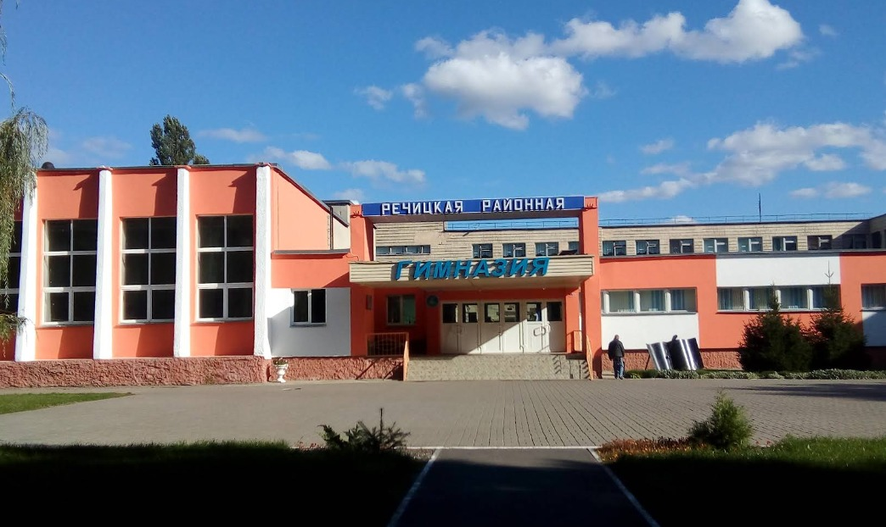

Заместитель директора по учебно-методической работе
—
Заместитель директора по воспитательной работе
—
Предварительная запись на личный прием осуществляется по телефону 8 (02340) 76737.
Об учреждении

Речицкая районная гимназия имени В.Ф. Маргелова – учреждение общего среднего образования, которое уверенно смотрит в будущее и идёт в ногу с передовыми образовательными технологиями.
Профили обучения:
На II ступени (5–9 классы): углубленное изучение английского и немецкого языков, математики;
На III ступени (10–11 классы): углубленное изучение математики, физики, химии, биологии, обществоведения, русского и иностранных языков.
Особенности образовательной среды:
широкий спектр факультативных занятий;
высокий уровень развития олимпиадного движения;
исследовательская деятельность учащихся в сотрудничестве с вузами;
работа инженерно-технического центра на основе STEM-подхода.
Вышестоящая организация: Отдел образования Речицкого районного исполнительного комитета
Адрес: 247500, г. Речица, ул. Ленина, 22
Телефон: 8 (02340) 6-56-31, E-mail: priemnoy-roo@rechitsa-edu.gov.by